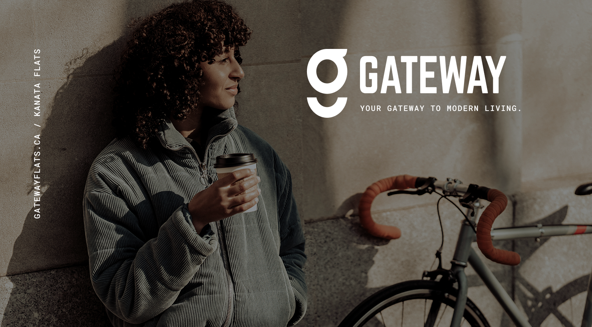
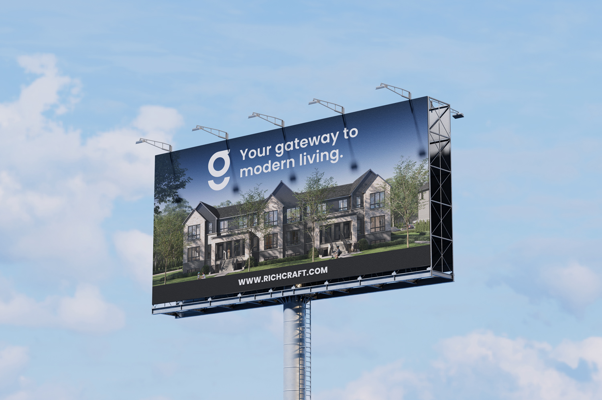
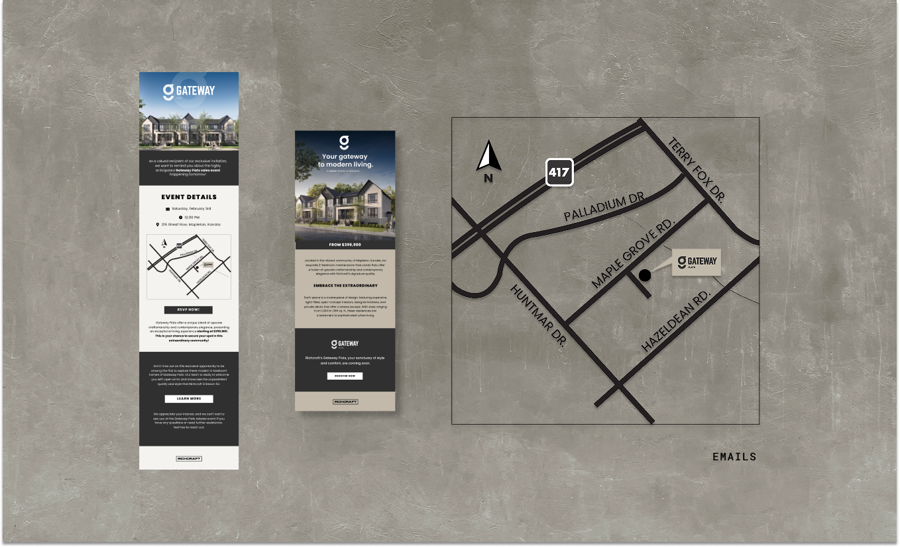
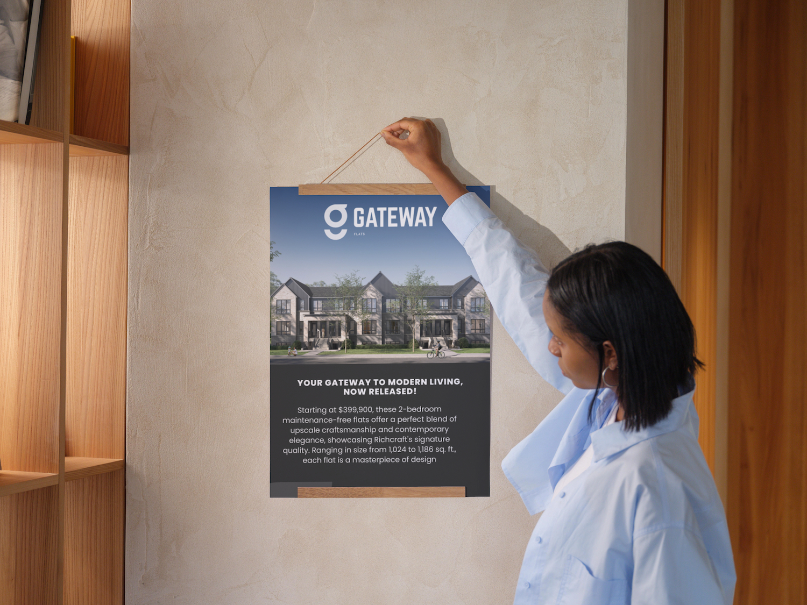
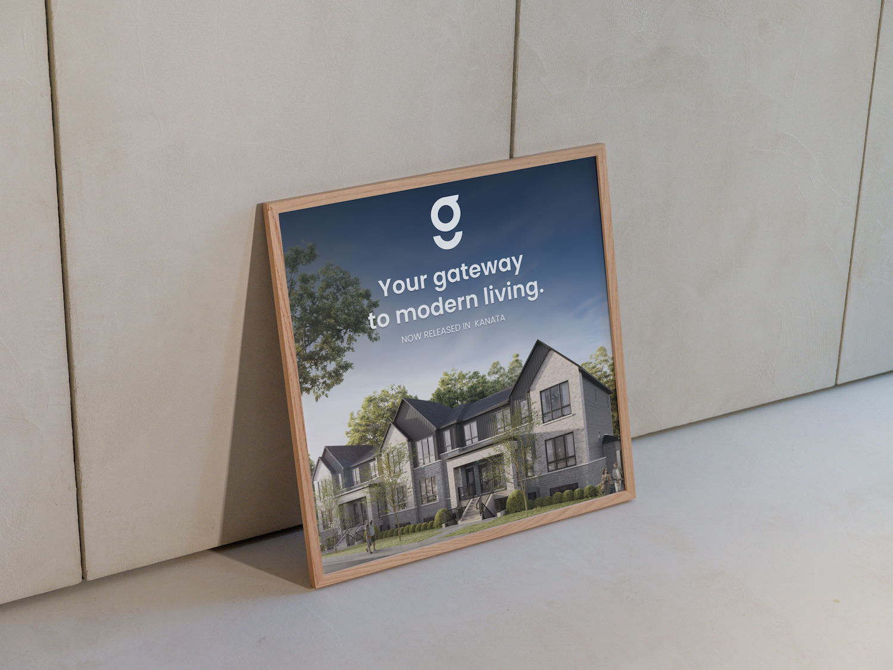

Richcraft was launching a community
for people who had never bought a home.
Richcraft Homes is one of Ottawa's established residential builders. Most of their communities target move-up buyers. Gateway was different. It was designed for millennials and Gen Z buyers in their 20s and early 30s, people purchasing their first property and coming to it with skepticism toward traditional real estate marketing.
I was one of the designers on the project, collaborating on the brand rollout from concept through launch. The work focused on building a visual system that could stay consistent across every touchpoint while still feeling warm, modern, and accessible.
Build a cohesive launch system for Gateway that connects with younger first-time buyers. It should feel contemporary and personal, not corporate, and work across print, digital, and on-site signage from day one.
Real estate branding keeps using the same visual language.
Younger buyers have learned to ignore it.
Most residential brands look the same. Dark serifs, gold accents, cold photography. To a first-time buyer in their late 20s, that language reads as formal and not built for them. Gateway needed to feel like a beginning, not a prestige purchase.
I started with the architecture,
not a mood board.
Most brand projects begin with references from other industries. I did the opposite. The 3D architectural renderings for Gateway already existed, and they told me what the community actually looked like: clean lines, warm stone and concrete tones, generous windows, open green space.
I used those renderings as the reference point for how the colour direction should behave across layouts. That kept the work grounded in the actual architecture instead of feeling like a generic real estate campaign.
Modern simplicity. Every element earns its place. If it does not add clarity or warmth, it comes out.
Architecture reference

Branding moodboard

Clean lines, warm tones,
and type that does not try too hard.
The launch system brought together the core identity, layout principles, and asset system into one cohesive structure. Each piece had to hold up across formats, from a small digital ad to a full-size sales center banner.
Color palette
The palette was applied to echo the tones in the 3D architectural renderings.
Typography
Roboto appeared in the logo, while Poppins carried the supporting copy across the launch system.
Roboto GATEWAY
Poppins Your first home. Your way in.
Poppins Modern homes designed for how people actually live. Open layouts, natural light, and every detail considered.
Poppins Register Now · Ottawa, ON
The system had to hold up
from a banner to a browser.
A brand system is only useful if it works in every format the team actually needs. For Gateway, that meant print collateral for the sales center, digital ads for social and search, email campaigns to the registrant list, and on-site signage.
I built a set of templates for each format so the marketing team could produce new assets without the design drifting. Every template used the same palette, type scale, and spacing rules from the core system.






The brand connected with
exactly who it was built for.
Within two weeks after product launch, Gateway's registrant numbers came back strong. The target demographic responded. Over 600 people from the 20 to 35 age range registered within the launch window, and the broader engagement across brand materials reached more than 4,100 new users.
The 35% conversion rate from initial interest to action was above the benchmark for comparable new community launches in the Ottawa market.
Registrants from the target demographic within the launch window
New users engaging with Gateway brand materials across channels
Conversion rate from registration interest to confirmed action
The brand looked different from everything else in the market. Younger buyers noticed. When a brand does not try to impress the wrong person, it reaches the right one faster.
The quieter the system, the louder the brand.
I came into this project thinking more options meant more flexibility. By the end I had stripped the palette down, cut half the type styles, and trusted white space to do real work. The brand felt stronger for it.